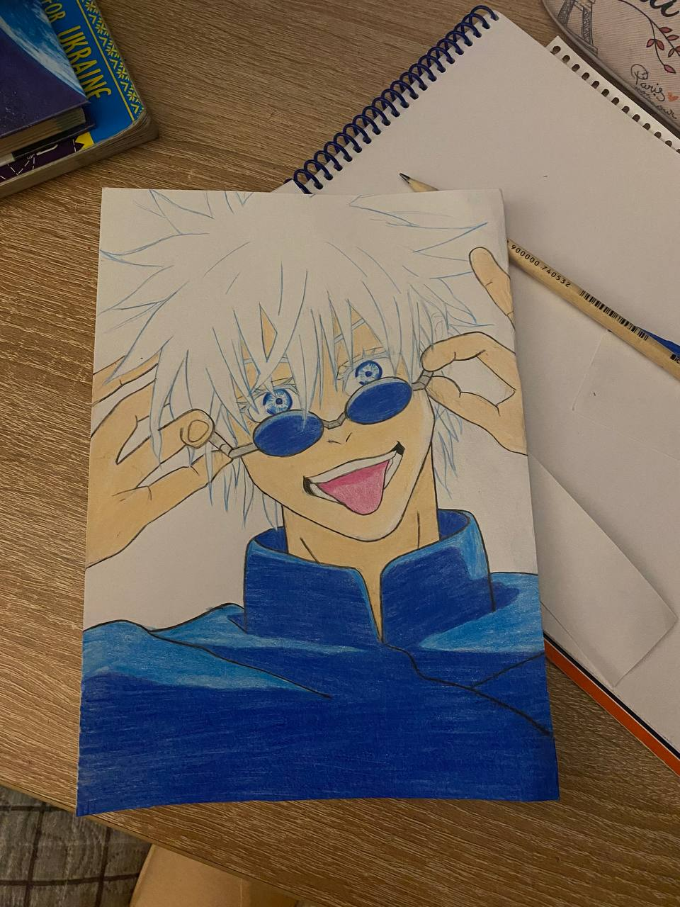
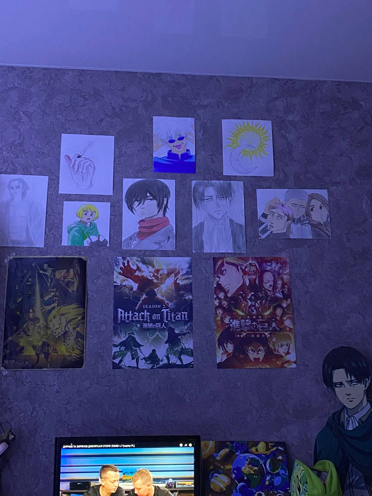
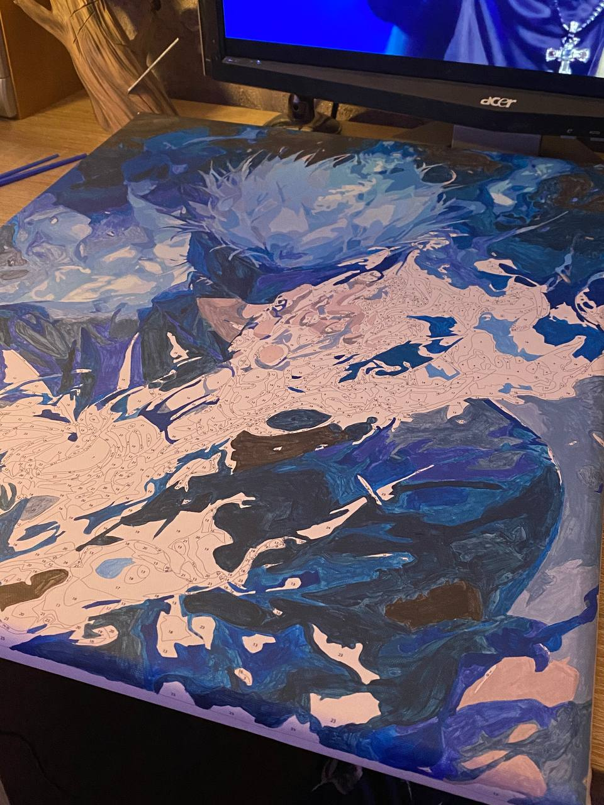

З дитинства я була творчою особистістю та дуже любила малювати. Саме тому в майбутньому планую пройти додаткові курси з графічного дизайну, щоб розвинути свої творчі здібності та поєднати їх із професійними навичками. А моя улюблена пісня:


